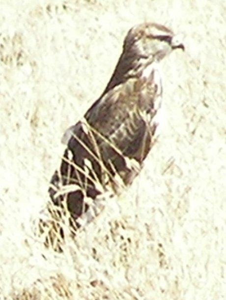
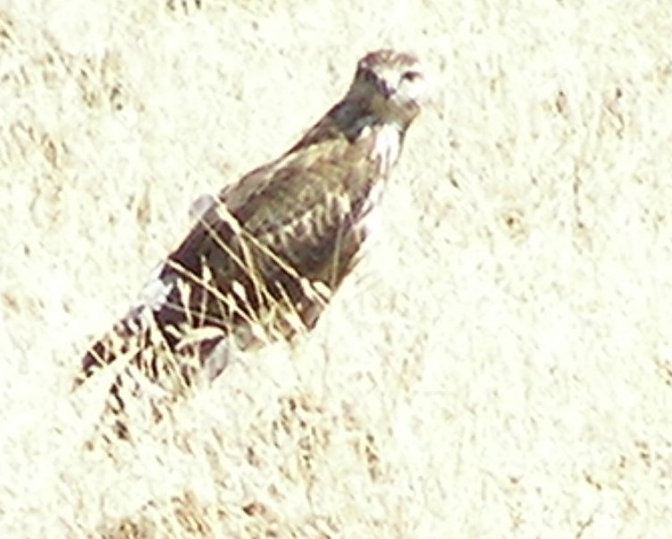

45-50cm.
|  |  |
On the ground it appears more delicate than a European buzzard. In flight its wings, tail and rump appear plain brown as viewed from behind. It can be seen on the ground, close to trees on the grassy hills around Debre Birhan. I have never been able to view it from below.